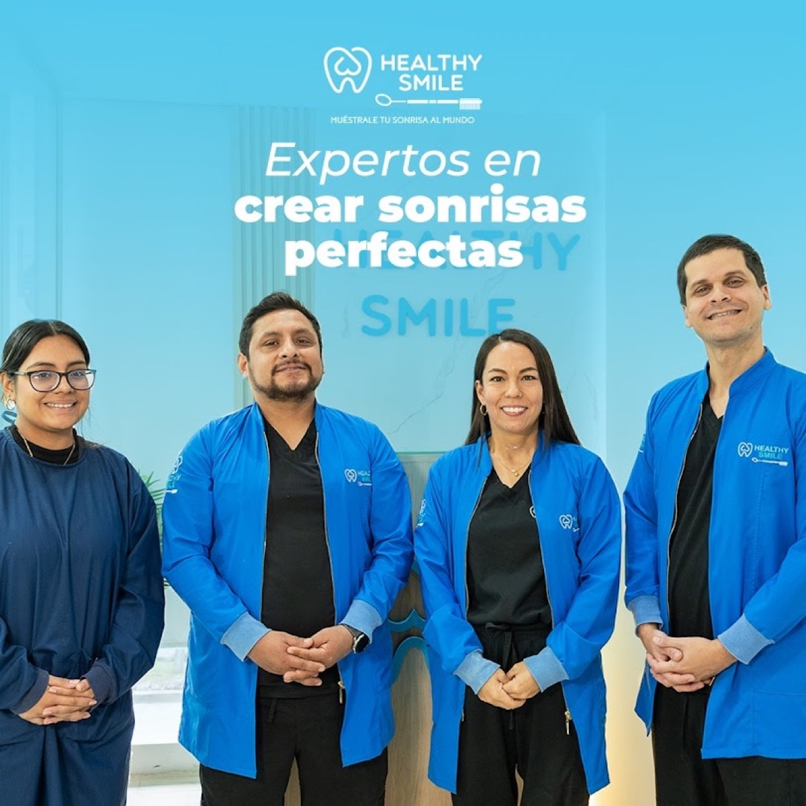
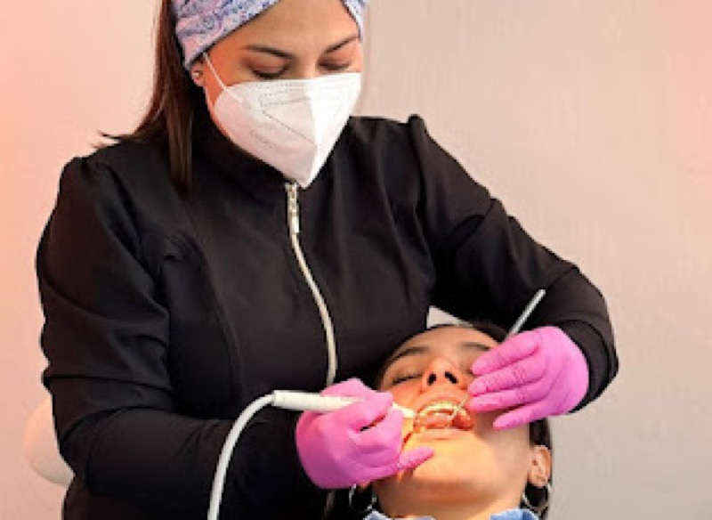
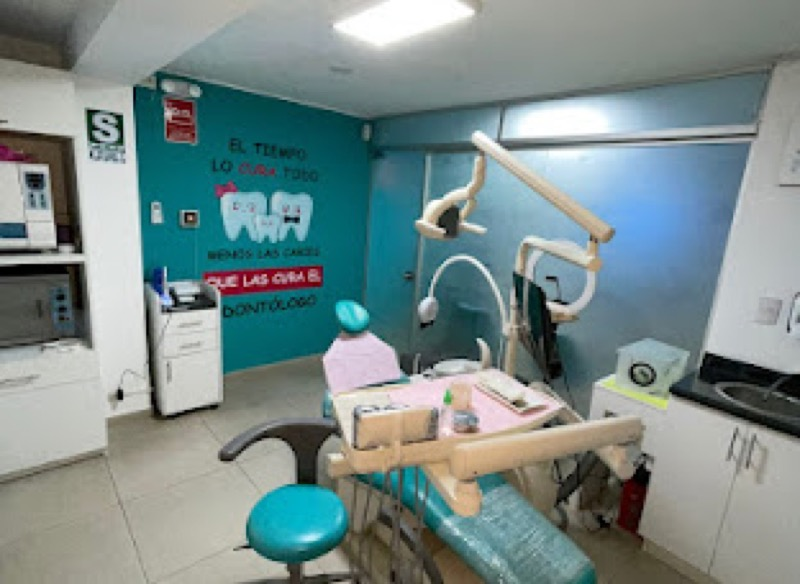
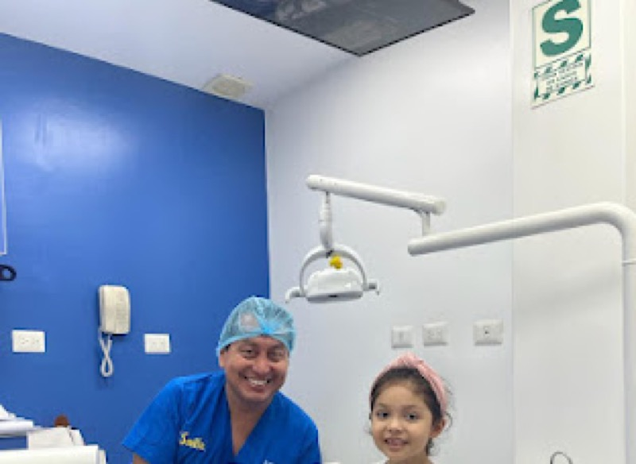
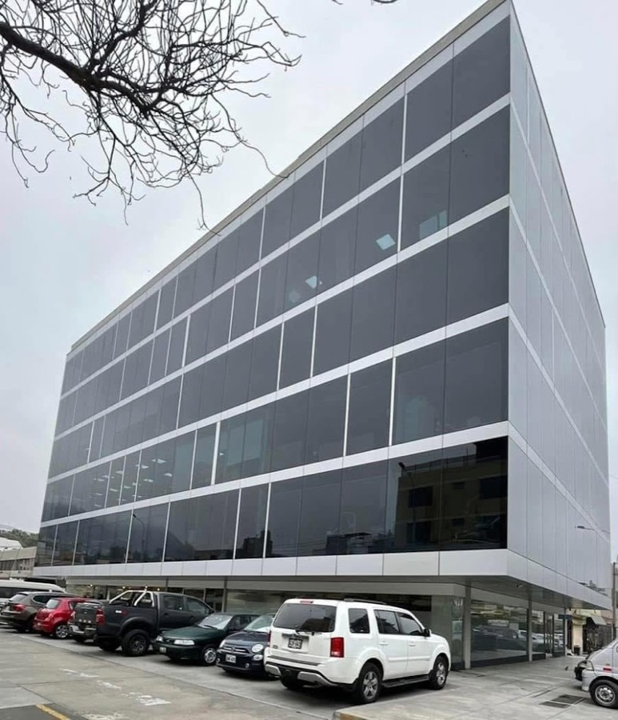
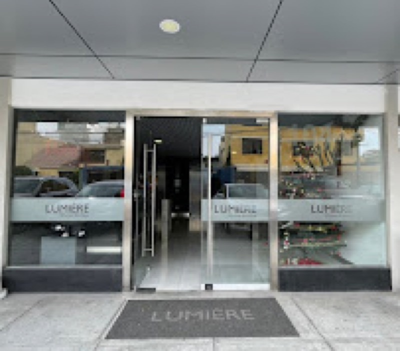

Evaluación dental
Diagnóstico general del estado de tu salud bucal para planificar tu tratamiento.
Consultar por WhatsAppPágina demo preparada por Lima Systems Lab. No es el sitio oficial hasta aprobación del negocio.

Dental Healthy Smile Surco cuenta con 5.0★ y 191 reseñas en Google. Coordina una evaluación dental por WhatsApp en Santiago de Surco, Lima.
Si llegaste desde Google, aquí puedes ver los servicios, la ubicación y escribir directo por WhatsApp para coordinar una evaluación dental en Surco. Sin formularios, sin espera.
Consulta disponibilidad y coordina tu cita directamente por WhatsApp.
Diagnóstico general del estado de tu salud bucal para planificar tu tratamiento.
Consultar por WhatsAppCorrección de la posición dental con brackets. Consulta opciones y plazos disponibles.
Consultar por WhatsAppOrtodoncia colocada en la cara interna de los dientes, sin que se vean desde afuera.
Consultar por WhatsAppVarios pacientes mencionan este procedimiento en sus reseñas. Consulta tu caso por WhatsApp.
Consultar por WhatsAppTratamiento de conductos para salvar dientes con daño pulpar. Consulta tu caso antes de decidir.
Consultar por WhatsAppTratamiento estético para aclarar el tono de tus dientes. Mencionado en reseñas de Google.
Consultar por WhatsAppTratamientos para mejorar la apariencia de tu sonrisa. Listado en el perfil de Google de la clínica.
Consultar por WhatsAppReemplazo de dientes perdidos mediante implantes. Consulta si eres candidato y coordina una evaluación.
Consultar por WhatsAppOdontología para niños. El perfil de Google menciona atención pediátrica entre sus servicios.
Consultar por WhatsAppEl perfil de Google menciona servicios de emergencia dental. Si tienes dolor o urgencia, escríbeles de inmediato.
Consultar por WhatsAppSegún reseñas públicas de Google, varios pacientes mencionan explicaciones claras, trato profesional, procedimientos con poco dolor y seguimiento después del tratamiento.
El equipo explica los procedimientos antes y durante la atención.
Varios pacientes mencionan experiencias con mínimo dolor, incluso en extracciones y endodoncia.
Pacientes valoran que el equipo hace seguimiento después de los tratamientos.
Comentarios destacan el ambiente profesional y las medidas de bioseguridad.



El perfil de Google lista atención pediátrica entre los servicios disponibles. Si buscas odontología para niños en Santiago de Surco, puedes consultar disponibilidad directamente por WhatsApp.
Consultar por WhatsAppAlgunos visitantes mencionan buenas experiencias durante su estadía en Lima. Si estás de paso por la ciudad, puedes escribir por WhatsApp para consultar disponibilidad y coordinar una evaluación dental en Surco.
Información proveniente del perfil público de Google. Te recomendamos confirmar disponibilidad por WhatsApp antes de tu visita.
Coordinar por WhatsAppCoordinar una evaluación dental es simple.
Usa el botón de esta página para abrir WhatsApp con un mensaje listo para enviar.
No necesitas saber exactamente qué tienes. Solo describe lo que sientes o lo que buscas.
El equipo te responde para confirmar el día y hora que mejor te acomode.
📍 Edificio Corporativo Lumiere
Los Laureles 104
Santiago de Surco 15023
Lima, Perú
📞 +51 920 118 193


Resumen de temas recurrentes en las 191 reseñas con 5.0★ del perfil público de Google.
"Pacientes destacan explicaciones claras sobre los procedimientos antes y durante la atención."
"Varios comentarios mencionan tratamientos realizados con poco dolor o sin dolor."
"Visitantes de otros países mencionan haber tenido buena experiencia durante su estadía en Lima."
"Pacientes valoran el seguimiento que reciben después de sus procedimientos dentales."
Reseñas del perfil público de Google · Promedio: 5.0★ · 191 reseñas
Ver reseñas completas en GoogleSí. La atención es con cita previa según el perfil de Google y el WhatsApp Business. Te recomendamos coordinar antes de ir.
Sí. Cuentan con WhatsApp Business activo. Usa los botones de esta página para escribirles directamente.
Edificio Corporativo Lumiere, Los Laureles 104, Santiago de Surco 15023, Lima, Perú.
Según reseñas de Google, varios pacientes mencionan tratamientos de ortodoncia y brackets. Consulta disponibilidad por WhatsApp.
El perfil de Google menciona servicios de emergencia dental. Si tienes urgencia, escríbeles por WhatsApp lo antes posible.
El perfil de Google menciona atención pediátrica. Consulta disponibilidad directamente por WhatsApp.
El perfil de Google indica que aceptan tarjeta de crédito, débito y pagos NFC/contactless. Confirma los detalles antes de tu cita.
Algunos comentarios en Google mencionan buenas experiencias de visitantes en Lima. WhatsApp facilita coordinar aunque estés de paso. Algunas reseñas también mencionan comunicación en inglés.
Varios pacientes mencionan extracciones de muelas del juicio en las reseñas de Google. Consulta tu caso directamente por WhatsApp.
Según reseñas de Google, algunos pacientes mencionan tratamientos de blanqueamiento dental. Escribe por WhatsApp para más información.
Dental Healthy Smile Surco · 5.0★ · 191 reseñas en Google · Santiago de Surco, Lima
Reservar por WhatsApp